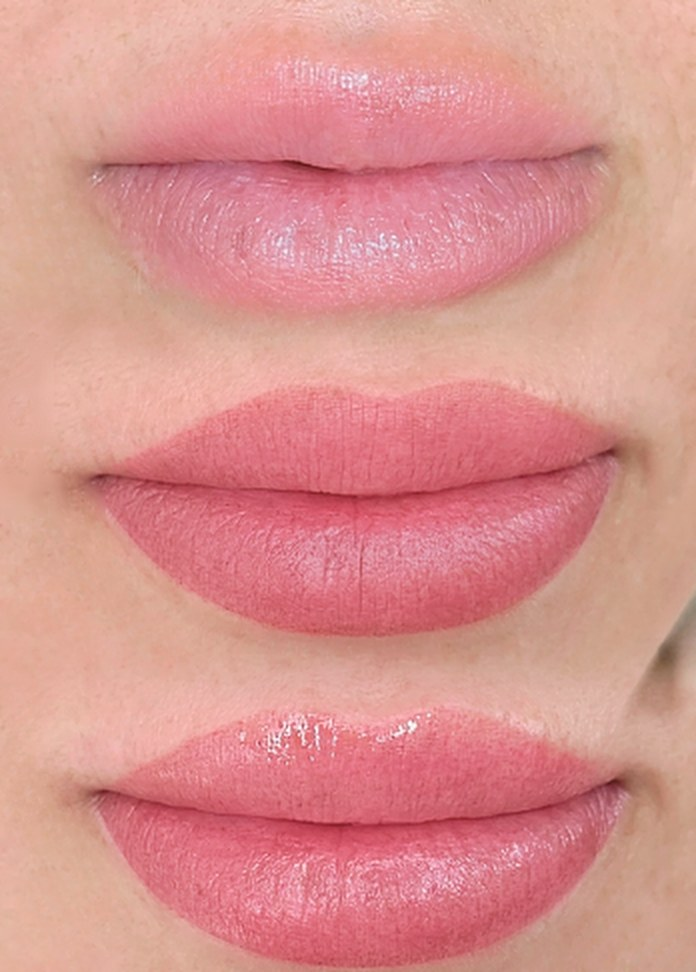
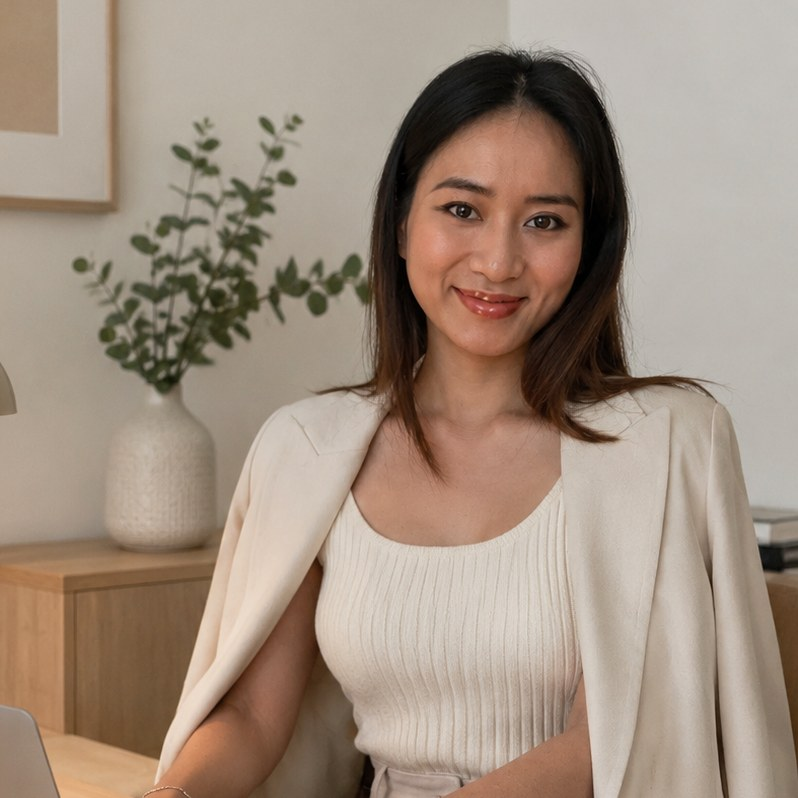

Sculpted Lip Blush ger läpparna mjuk färg, tydlig kontur och ett fylligare intryck – utan fillers. Utförs av en certifierad PMU-artist utbildad i Vietnam, med en nästan smärtfri teknik.

SculptedLip BlushFler resultat ↗Lip Blush är permanent makeup för läpparna – pigment som framhäver din naturliga läppfärg och form. Du vaknar med fräscha läppar varje dag, utan läppstift och utan injektioner.
En mjuk ton som piggar upp bleka eller ojämna läppar – anpassad efter din hudton och dina önskemål.
Definierar läppens form och jämnar ut asymmetri, så läpparna ser skarpare och mer balanserade ut.
Ger en optisk effekt av fylligare läppar som håller i 1–3 år – ett naturligt alternativ till fillers.
Varje behandling börjar med dig – dina drag, din hudton och vad som kommer att kännas rätt även över tid.
Se pris & boka på BokadirektAktuella priser och lediga tider finns alltid på Bokadirekt. Osäker på om Lip Blush passar dig? Ring eller skriv till oss.
Vi går igenom dina önskemål, din hudton och dina läppars naturliga form.
Konturen ritas upp och färgen blandas för just dig – du godkänner allt innan vi börjar.
Med bedövning och en skonsam teknik upplever de flesta behandlingen som nästan smärtfri.
Efter 6–8 veckor perfekterar vi färg och jämnhet för ett hållbart resultat.

HOANG ANH · ARTIST / OWNERHon är mer än en skönhetsterapeut. Hon ser på skönhet med en konstnärs blick – där fokus inte bara ligger på teknik, utan på att förstå vad som faktiskt passar varje person.
För henne handlar bra arbete inte om att följa trender eller använda samma stil på alla. Varje behandling anpassas noggrant efter kundens drag, helhet och det som kommer att kännas rätt även över tid.
Hoang Anh är utbildad och certifierad i Vietnam, där permanent makeup är känt för precision och mjuka, naturliga resultat.
Färgen är betydligt mörkare än slutresultatet och läpparna kan vara lätt svullna. Helt normalt.
Läpparna flagnar och färgen kan se ojämn ut. Pilla inte – låt huden släppa i sin egen takt.
Färgen kan se ut att nästan försvinna. Ingen panik – pigmentet sätter sig under den nya huden.
Den riktiga färgen "blommar" fram. Touch up efter 6–8 veckor ger ett perfekt resultat.
Lip Blush är en kosmetisk tatuering (permanent makeup) där pigment läggs i läpparna för att ge en naturlig färg, tydligare kontur, bättre symmetri och ett fylligare utseende – utan fillers. Resultatet ser ut som naturligt färgade läppar, inte som läppstift.
Hos Emmai Salon används en skonsam teknik och bedövning, så de flesta kunder upplever behandlingen som nästan smärtfri – mer som ett lätt kittlande än smärta.
Lip Blush håller normalt 1–3 år beroende på hudtyp, livsstil och solexponering. En touch up efter 6–8 veckor rekommenderas för ett jämnt och hållbart resultat.
De första dagarna är färgen mörkare och läpparna kan vara lätt svullna. Runt dag 4–7 flagnar läpparna och färgen ser ljusare ut, och efter 4–6 veckor har den slutliga, naturliga färgen satt sig.
Ja, för dig som vill ha fräschare färg, tydligare kontur och ett fylligare intryck utan injektioner. Lip Blush ändrar inte läppens volym men ger en optisk effekt av fylligare läppar som ser naturlig ut.
Alla behandlingar utförs av Hoang Anh, grundare av Emmai Salon och certifierad PMU-artist utbildad i Vietnam, där permanent makeup är känt för precision och naturliga resultat. Se läkta resultat på Instagram @emmai.pmu.
Aktuella priser och lediga tider för Lip Blush och touch up finns alltid på Emmai Salons sida på Bokadirekt.
Emmai Salon ligger på Skånegatan 35 i Göteborg, några minuters promenad från Korsvägen, Liseberg och Scandinavium. Det finns parkeringsplatser framför salongen.
Du bokar enklast online dygnet runt via Bokadirekt.
Se pris och lediga tider och boka online dygnet runt – eller ring oss om du har frågor.